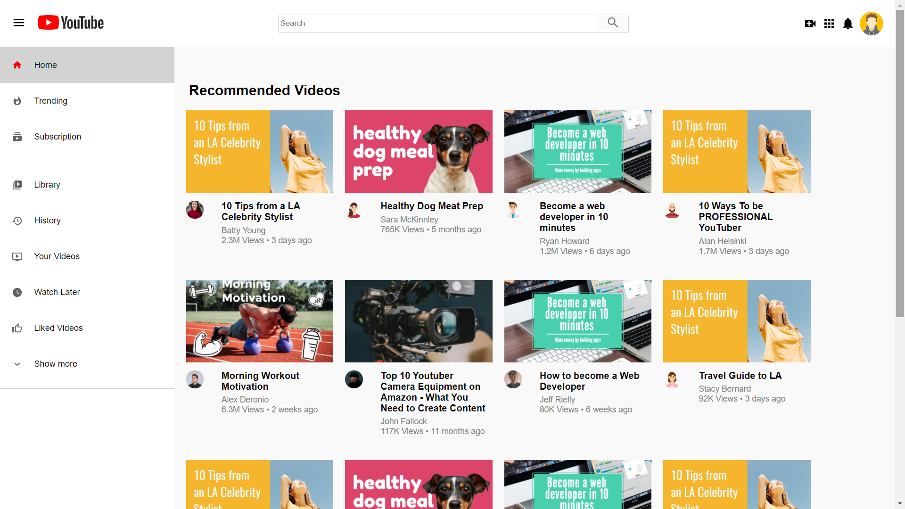
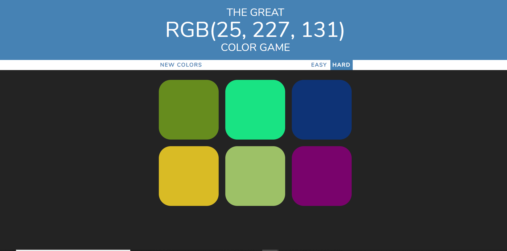

Sujoy Dutta
Front-End Developer
To obtain a front-end developer position that promotes creativity and growth in an environment that I can contribute my UI skills, technical skills, and design skills and continue to develop experience in a professional community. Software developer for 2+ years in the tech industry. Hands-on experience in developing React.js web-apps along with good CSS and Bootstrap. Good with Data Structures, Algorithms, and Problem Solving. Want to build products that can make a good impact on people’s lives.
Tech Skills
- Frontend Technologies - JavaScript(ES6+, Promise, Closure), React.js, Node.js, HTML5, CSS3, Bootstrap4, React-Bootstrap, Material UI, Styled-Component, Responsive web design, Webpack, Moment.js, JSON, AJAX, jQuery , Backbone.js(Basic)
- Back-end - Gradle, REST, REST API, JAVA, J2EE
- Database - MySQL, Oracle
- Tools & Technologies - GIT, Git Lab, Github, Docker, Jenkins, Postman, ESLint Tool, Worked in an environment of Agile(Scrum), JIRA & Confluence, Atom, IntelliJ, Sublime, VSCode
Featured Projects
All my projects are found at Github. For more information please visit my Github repository - My Github Repos.
GetWeather App

Designed, created, and build a GetWeather React.js app that lets you find the weather of any city and give you all the
relevant weather information in an interactive & responsive UI.
To built the the App I used the create-react-app as base for the app changed the App.js and index.js files with
my own and also changed the App.css and added 3 more components. Used latest Bootstrap for responsiveness where
the grid system and flexbox(both used) came handy as well as the CSS3 media queries helped in positioning the
content at different screen sizes. Moment.js is another handy tool used for date & time manipulation.
Following are the tools/lib/frameworks used-
1.React.js
2.Moment.js
3.Bootstrap 4.5.2
4.JavaScript(ES6+)
5.CSS3
6.HTML5
7.Webpack
8.Babel.js
Future scope- To use Google maps to get the local timezone, precipitation
prediction, and some more information in improved UX where users can select what they want to know.
Youtube-clone
This is a react web app which is technically a clone of the youtube. It has almost all the functionality of the youtube.
This project demonstrates the power of React and react-roter. It is styled using Flexbox which handles the responsiveness
and positioning of each of the components and Material-UI is used for getting the flat looking style that the original youtube has.
This is hoisted using Firebase.
Tech Stack ---- React, React-router, Firebase, Material-UI, Flexbox, CSS3, HTML5 is
used and also all the classnames used BEM_convention it is completely responsive also.
Future Scope -- Next I am planning to add user authentication feature using Firebase.
Search page will be routed to some of the relevant pages and the ability to route to relevant videos will also be upgraded
Color-Guessing-Game
A JavaScript color guessing game. This is a guessing game built with JavaScript where users have to guess the correct color
from a color palette which matches to the RGB() color code displayed. It has two modes EASY and HARD choose which ever you want.
The EASY mode consists of 3 boxes so the probability is high in choosing the correct color. The HARD will have 6 boxes and
hence the probability is less in choosing the correct color.
Tech Stack ---- JavaScript, HTML5, CSS3 is used and it is responsive also.
Future Scope -- Next I am planning to upgrade to difficult levels and add a database to show case the scores.
Also a score-keeper app will be added with this app to monitor the progress along with authentication to track users.
Work Experience
1) Full Stack Developer
MetricStream Infotech Pvt. Ltd
Date at job - June 2019 - July 2020
M7 PROJECT - BUSINESS RULES
- Roles and Responsibility - Developed as well as collaborated with different teams to built a centralized framework to define business logic which can be applied to an easy to understand UI/UX that improves configurability of GRC Applications.
- Environment -> JavaScript, jQuery, HTML5, CSS3, Bootstrap, Node.js, Backbone.js
- Description - Business Rules is a standard framework where user can write any rule on a component in groovy and it will execute it on the server as well as UI, it will validate the rule, detect cycles (using Direct Acyclic graphs – DAG), save it in ElasticSearch, execute it on server-side returning true or false, convert it to JavaScript and send to UI.
- Roles and Responsibility - Developed complex features using JavaScript, Java, Hash Maps, and Regex that can do the relaxation of Special Characters in specific fields of MetricStream Web-based App by 65%, tested, and delivered 1 byte, and multi-byte special characters, and improved user experience by 46%.
- Environment -> JavaScript, Java, Regex
- Description - Analysis and building features for the relaxation of Special Characters ranging from 1 byte to multi-byte characters by using Regex, Java, JavaScript, and in-house API.
- Innovation Project -
- Roles and Responsibility - Built and developed an ML/AI chatbot engine for the MetricStream Web App. The goal was to make a AI Chatbot that can detect and ressolve the causes of support issues.
- Environment -> Python, Tensorflow
- Description - Oddly detection, decision making, and Identifying the root cause for our support issues using trend analysis.
2) Project Engineer
Wipro Technologies
Date at job - July 2018 - May 2019
STATISTIC OUTPUT MANAGEMENT SYSTEM(SOMS)
- Role – Software Developer
- Duration - 11 months
- Client - Zurich American Insurance
- Description - My Project was on Enterprise Content Management (ECM). Content coming from Downstream is processed by us and then send to Upstream. I did Document generation with Papyrus tool, log connection, and construction of the input and response logs in SOMS for input request.
Education
Kalinga Institute of Industrial Technology - Bhubaneswar
- July 2014 - April 2018
- CGPA - 7.91